- After studying this chapter, you will be able to:
- Discuss the bones of the pectoral and pelvic girdles, and describe how these unite the limbs with the axial skeleton
- Describe the bones of the upper limb, including the bones of the arm, forearm, wrist, and hand
- Identify the features of the pelvis and explain how these differ between the adult male and female pelvis
- Describe the bones of the lower limb, including the bones of the thigh, leg, ankle, and foot
- Describe the embryonic formation and growth of the limb bones
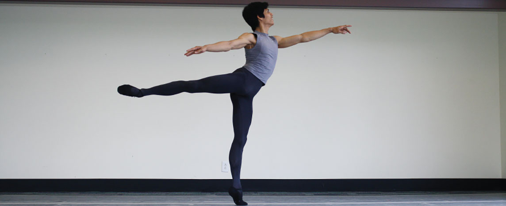
- Describe the bones that form the pectoral girdle
- List the functions of the pectoral girdle
The appendicular skeleton includes all of the limb bones, plus the bones that unite each limb with the axial skeleton (Figure \(\PageIndex{1}\) ). The bones that attach each upper limb to the axial skeleton form the pectoral girdle (shoulder girdle). This consists of two bones, the scapula and clavicle (Figure \(\PageIndex{2}\) ). The clavicle (collarbone) is an S-shaped bone located on the anterior side of the shoulder. It is attached on its medial end to the sternum of the thoracic cage, which is part of the axial skeleton. The lateral end of the clavicle articulates (joins) with the scapula just above the shoulder joint. You can easily palpate, or feel with your fingers, the entire length of your clavicle.
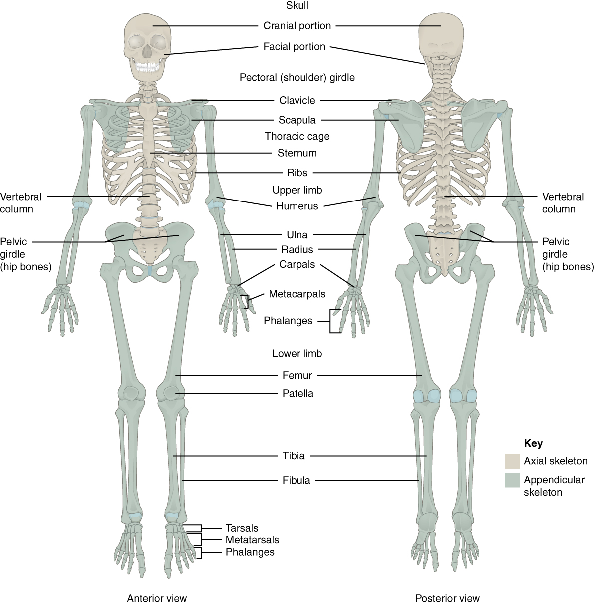
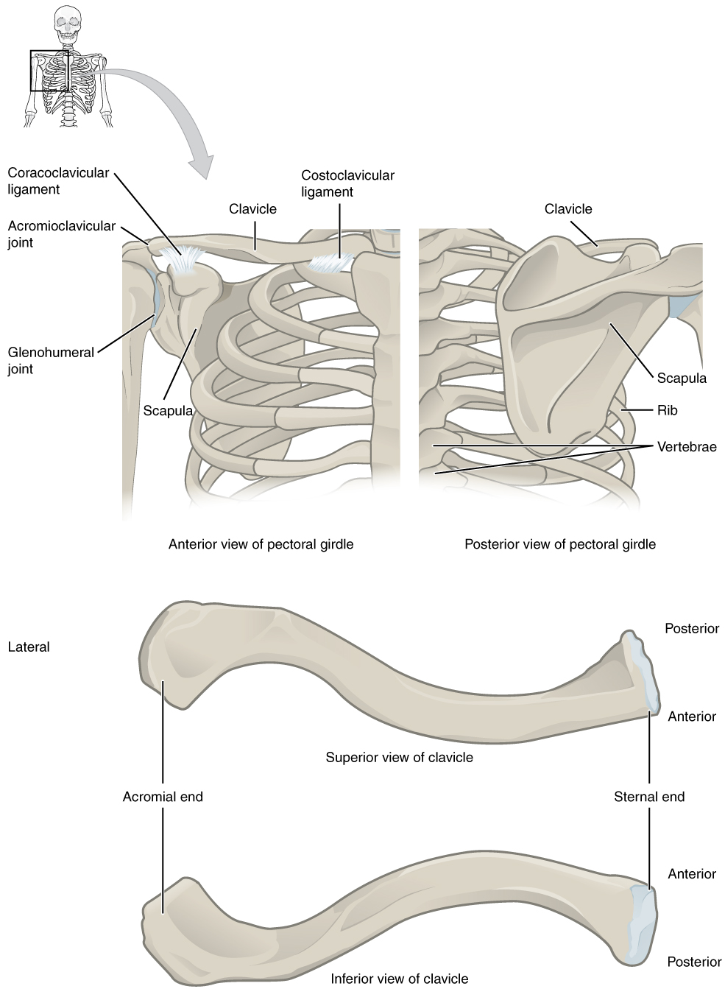
Thescapula(shoulder blade) lies on the posterior aspect of the shoulder. It is supported by theclavicleand articulates with the humerus (arm bone) to form the shoulder joint. The scapula is a flat, triangular-shaped bone with a prominent ridge running across its posterior surface. This ridge extends out laterally, where it forms the bony tip of the shoulder and joins with the lateral end of the clavicle. By following along the clavicle, you can palpate out to the bony tip of the shoulder, and from there, you can move back across your posterior shoulder to follow the ridge of the scapula. Move your shoulder around and feel how the clavicle and scapula move together as a unit. Both of these bones serve as important attachment sites for muscles that aid with movements of the shoulder and arm.
The right and left pectoral girdles are not joined to each other, allowing each to operate independently. In addition, the clavicle of eachpectoral girdleis anchored to the axial skeleton by a single, highly mobile joint. This allows for the extensive mobility of the entire pectoral girdle, which in turn enhances movements of the shoulder and upper limb.
The clavicle is the only long bone that lies in a horizontal position in the body (see Figure 8.3). The clavicle has several important functions. First, anchored by muscles from above, it serves as a strut that extends laterally to support the scapula. This in turn holds the shoulder joint superiorly and laterally from the body trunk, allowing for maximal freedom of motion for the upper limb. The clavicle also transmits forces acting on the upper limb to the sternum and axial skeleton. Finally, it serves to protect the underlying nerves and blood vessels as they pass between the trunk of the body and the upper limb.
The clavicle has three regions: the medial end, the lateral end, and the shaft. The medial end, known as thesternal end of the clavicle, has a triangular shape and articulates with the manubrium portion of the sternum. This forms thesternoclavicular joint, which is the only bony articulation between the pectoral girdle of the upper limb and the axial skeleton. This joint allows considerable mobility, enabling the clavicle and scapula to move in upward/downward and anterior/posterior directions during shoulder movements. The sternoclavicular joint is indirectly supported by thecostoclavicular ligament(costo- = “rib”), which spans the sternal end of the clavicle and the underlying first rib. The lateral oracromial end of the claviclearticulates with the acromion of the scapula, the portion of the scapula that forms the bony tip of the shoulder. There are some sex differences in the morphology of the clavicle. In females, the clavicle tends to be shorter, thinner, and less curved. In males, the clavicle is heavier and longer, and has a greater curvature and rougher surfaces where muscles attach, features that are more pronounced in manual workers.
The clavicle is the most commonly fractured bone in the body. Such breaks often occur because of the force exerted on the clavicle when a person falls onto their outstretched arms, or when the lateral shoulder receives a strong blow. Because the sternoclavicular joint is strong and rarely dislocated, excessive force results in the breaking of the clavicle, usually between the middle and lateral portions of the bone. If the fracture is complete, the shoulder and lateral clavicle fragment will drop due to the weight of the upper limb, causing the person to support the sagging limb with their other hand. Muscles acting across the shoulder will also pull the shoulder and lateral clavicle anteriorly and medially, causing the clavicle fragments to override. The clavicle overlies many important blood vessels and nerves for the upper limb, but fortunately, due to the anterior displacement of a broken clavicle, these structures are rarely affected when the clavicle is fractured.
The scapula is also part of the pectoral girdle and thus plays an important role in anchoring the upper limb to the body. The scapula is located on the posterior side of the shoulder. It is surrounded by muscles on both its anterior (deep) and posterior (superficial) sides, and thus does not articulate with the ribs of the thoracic cage.
The scapula has several important landmarks (Figure \(\PageIndex{3}\) ). The three margins or borders of the scapula, named for their positions within the body, are thesuperior border of the scapula, themedial border of the scapula, and thelateral border of the scapula. Thesuprascapular notchis located lateral to the midpoint of the superior border. The corners of the triangular scapula, at either end of the medial border, are thesuperior angle of the scapula, located between the medial and superior borders, and theinferior angle of the scapula, located between the medial and lateral borders. The inferior angle is the most inferior portion of the scapula, and is particularly important because it serves as the attachment point for several powerful muscles involved in shoulder and upper limb movements. The remaining corner of the scapula, between the superior and lateral borders, is the location of theglenoid cavity(glenoid fossa). This shallow depression articulates with the humerus bone of the arm to form theglenohumeral joint(shoulder joint). The small bony bumps located immediately above and below the glenoid cavity are thesupraglenoid tubercleand theinfraglenoid tubercle, respectively. These provide attachments for muscles of the arm.
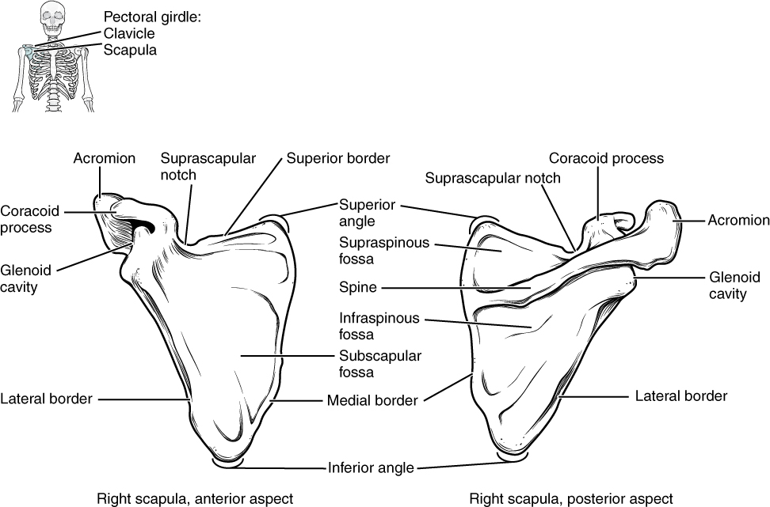
The scapula also has two prominent projections. Toward the lateral end of the superior border, between the suprascapular notch and glenoid cavity, is the hook-likecoracoid process(coracoid = “shaped like a crow’s beak”). This process projects anteriorly and curves laterally. At the shoulder, the coracoid process is located inferior to the lateral end of the clavicle. It is anchored to the clavicle by a strong ligament, and serves as the attachment site for muscles of the anterior chest and arm. On the posterior aspect, thespine of the scapulais a long and prominent ridge that runs across its upper portion. Extending laterally from the spine is a flattened and expanded region called theacromionoracromial process. The acromion forms the bony tip of the superior shoulder region and articulates with the lateral end of the clavicle, forming theacromioclavicular joint(see Figure 8.3). Together, the clavicle, acromion, and spine of the scapula form a V-shaped bony line that provides for the attachment of neck and back muscles that act on the shoulder, as well as muscles that pass across the shoulder joint to act on the arm.
The scapula has three depressions, each of which is called afossa(plural = fossae). Two of these are found on the posterior scapula, above and below the scapular spine. Superior to the spine is the narrowsupraspinous fossa, and inferior to the spine is the broadinfraspinous fossa. The anterior (deep) surface of the scapula forms the broadsubscapular fossa. All of these fossae provide large surface areas for the attachment of muscles that cross the shoulder joint to act on the humerus.
The acromioclavicular joint transmits forces from the upper limb to the clavicle. The ligaments around this joint are relatively weak. A hard fall onto the elbow or outstretched hand can stretch or tear the acromioclavicular ligaments, resulting in a moderate injury to the joint. However, the primary support for the acromioclavicular joint comes from a very strong ligament called thecoracoclavicular ligament(see Figure 8.3). This connective tissue band anchors the coracoid process of the scapula to the inferior surface of the acromial end of the clavicle and thus provides important indirect support for the acromioclavicular joint. Following a strong blow to the lateral shoulder, such as when a hockey player is driven into the boards, a complete dislocation of the acromioclavicular joint can result. In this case, the acromion is thrust under the acromial end of the clavicle, resulting in ruptures of both the acromioclavicular and coracoclavicular ligaments. The scapula then separates from the clavicle, with the weight of the upper limb pulling the shoulder downward. This dislocation injury of the acromioclavicular joint is known as a “shoulder separation” and is common in contact sports such as hockey, football, or martial arts.
📖 OpenStax Anatomy & Physiology 2e, Section 8.2. openstax.org · CC BY 4.0
- Identify the divisions of the upper limb and describe the bones in each region
- List the bones and bony landmarks that articulate at each joint of the upper limb
The upper limb is divided into three regions. These consist of thearm, located between the shoulder and elbow joints; theforearm, which is between the elbow and wrist joints; and thehand, which is located distal to the wrist. There are 30 bones in each upper limb (see Figure \(\PageIndex{1}\)). Thehumerusis the single bone of the upper arm, and theulna(medially) and theradius(laterally) are the paired bones of the forearm. The base of the hand contains eight bones, each called acarpal bone, and the palm of the hand is formed by five bones, each called ametacarpal bone. The fingers and thumb contain a total of 14 bones, each of which is aphalanx bone of the hand.
The humerus is the single bone of the upper arm region (Figure 8.5). At its proximal end is thehead of the humerus. This is the large, round, smooth region that faces medially. The head articulates with the glenoid cavity of the scapula to form the glenohumeral (shoulder) joint. The margin of the smooth area of the head is theanatomical neckof the humerus. Located on the lateral side of the proximal humerus is an expanded bony area called thegreater tubercle. The smallerlesser tubercleof the humerus is found on the anterior aspect of the humerus. Both the greater and lesser tubercles serve as attachment sites for muscles that act across the shoulder joint. Passing between the greater and lesser tubercles is the narrowintertubercular groove (sulcus), which is also known as thebicipital groovebecause it provides passage for a tendon of the biceps brachii muscle. Thesurgical neckis located at the base of the expanded, proximal end of the humerus, where it joins the narrowshaft of the humerus. The surgical neck is a common site of arm fractures. Thedeltoid tuberosityis a roughened, V-shaped region located on the lateral side in the middle of the humerus shaft. As its name indicates, it is the site of attachment for the deltoid muscle.
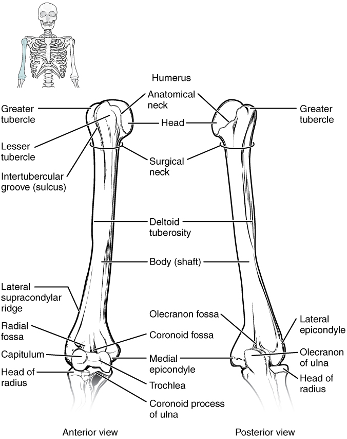
Distally, the humerus becomes flattened. The prominent bony projection on the medial side is themedial epicondyle of the humerus. The much smallerlateral epicondyle of the humerusis found on the lateral side of the distal humerus. The roughened ridge of bone above the lateral epicondyle is thelateral supracondylar ridge. All of these areas are attachment points for muscles that act on the forearm, wrist, and hand. The powerful grasping muscles of the anterior forearm arise from the medial epicondyle, which is thus larger and more robust than the lateral epicondyle that gives rise to the weaker posterior forearm muscles.
The distal end of the humerus has two articulation areas, which join the ulna and radius bones of the forearm to form theelbow joint. The more medial of these areas is thetrochlea, a spindle- or pulley-shaped region (trochlea = “pulley”), which articulates with the ulna bone. Immediately lateral to the trochlea is thecapitulum(“small head”), a knob-like structure located on the anterior surface of the distal humerus. The capitulum articulates with the radius bone of the forearm. Just above these bony areas are two small depressions. These spaces accommodate the forearm bones when the elbow is fully bent (flexed). Superior to the trochlea is thecoronoid fossa, which receives the coronoid process of the ulna, and above the capitulum is theradial fossa, which receives the head of the radius when the elbow is flexed. Similarly, the posterior humerus has theolecranon fossa, a larger depression that receives the olecranon process of the ulna when the forearm is fully extended.
The ulna is the medial bone of the forearm. It runs parallel to the radius, which is the lateral bone of the forearm (Figure \(\PageIndex{2}\)). The proximal end of the ulna resembles a crescent wrench with its large, C-shapedtrochlear notch. This region articulates with the trochlea of the humerus as part of the elbow joint. The inferior margin of the trochlear notch is formed by a prominent lip of bone called thecoronoid process of the ulna. Just below this on the anterior ulna is a roughened area called theulnar tuberosity. To the lateral side and slightly inferior to the trochlear notch is a small, smooth area called theradial notch of the ulna. This area is the site of articulation between the proximal radius and the ulna, forming theproximal radioulnar joint. The posterior and superior portions of the proximal ulna make up theolecranon process, which forms the bony tip of the elbow.
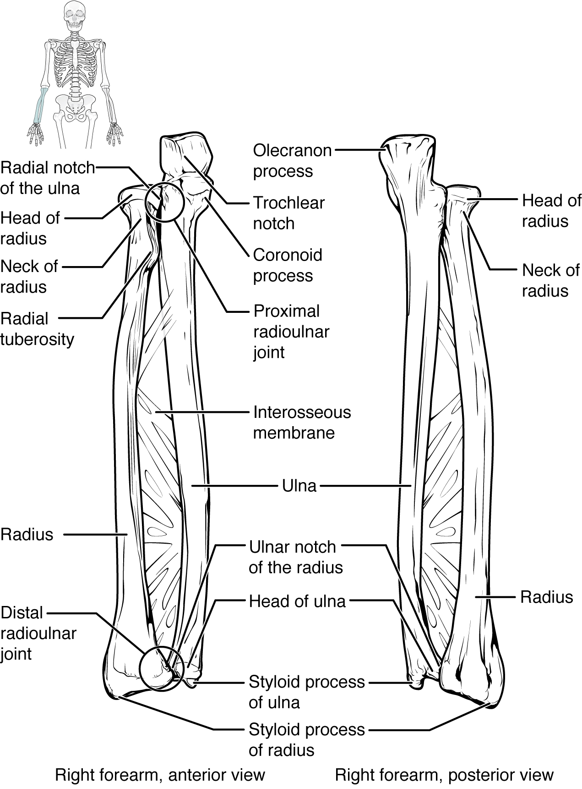
More distal is theshaft of the ulna. The lateral side of the shaft forms a ridge called theinterosseous border of the ulna. This is the line of attachment for theinterosseous membrane of the forearm, a sheet of dense connective tissue that unites the ulna and radius bones. The small, rounded area that forms the distal end is thehead of the ulna. Projecting from the posterior side of the ulnar head is thestyloid process of the ulna, a short bony projection. This serves as an attachment point for a connective tissue structure that unites the distal ends of the ulna and radius.
In the anatomical position, with the elbow fully extended and the palms facing forward, the arm and forearm do not form a straight line. Instead, the forearm deviates laterally by 5–15 degrees from the line of the arm. This deviation is called the carrying angle. It allows the forearm and hand to swing freely or to carry an object without hitting the hip. The carrying angle is larger in females to accommodate their wider pelvis.
The radius runs parallel to the ulna, on the lateral (thumb) side of the forearm (see Figure \(\PageIndex{3}\)). Thehead of the radiusis a disc-shaped structure that forms the proximal end. The small depression on the surface of the head articulates with the capitulum of the humerus as part of the elbow joint, whereas the smooth, outer margin of the head articulates with the radial notch of the ulna at the proximal radioulnar joint. Theneck of the radiusis the narrowed region immediately below the expanded head. Inferior to this point on the medial side is theradial tuberosity, an oval-shaped, bony protuberance that serves as a muscle attachment point. Theshaft of the radiusis slightly curved and has a small ridge along its medial side. This ridge forms theinterosseous border of the radius, which, like the similar border of the ulna, is the line of attachment for the interosseous membrane that unites the two forearm bones. The distal end of the radius has a smooth surface for articulation with two carpal bones to form theradiocarpal jointor wrist joint (Figure 8.7 and Figure 8.8). On the medial side of the distal radius is theulnar notch of the radius. This shallow depression articulates with the head of the ulna, which together form thedistal radioulnar joint. The lateral end of the radius has a pointed projection called thestyloid process of the radius. This provides attachment for ligaments that support the lateral side of the wrist joint. Compared to the styloid process of the ulna, the styloid process of the radius projects more distally, thereby limiting the range of movement for lateral deviations of the hand at the wrist joint.
Watch thisvideoto see how fractures of the distal radius bone can affect the wrist joint. Explain the problems that may occur if a fracture of the distal radius involves the joint surface of the radiocarpal joint of the wrist.
The wrist and base of the hand are formed by a series of eight small carpal bones (see Figure 8.7). The carpal bones are arranged in two rows, forming a proximal row of four carpal bones and a distal row of four carpal bones. The bones in the proximal row, running from the lateral (thumb) side to the medial side, are thescaphoid(“boat-shaped”),lunate(“moon-shaped”),triquetrum(“three-cornered”), andpisiform(“pea-shaped”) bones. The small, rounded pisiform bone articulates with the anterior surface of the triquetrum bone. The pisiform thus projects anteriorly, where it forms the bony bump that can be felt at the medial base of your hand. The distal bones (lateral to medial) are thetrapezium(“table”),trapezoid(“resembles a table”),capitate(“head-shaped”), andhamate(“hooked bone”) bones. The hamate bone is characterized by a prominent bony extension on its anterior side called thehook of the hamate bone.
A helpful mnemonic for remembering the arrangement of the carpal bones is “So Long To Pinky, Here Comes The Thumb.” This mnemonic starts on the lateral side and names the proximal bones from lateral to medial (scaphoid, lunate, triquetrum, pisiform), then makes a U-turn to name the distal bones from medial to lateral (hamate, capitate, trapezoid, trapezium). Thus, it starts and finishes on the lateral side.
The carpal bones form the base of the hand. This can be seen in the radiograph (X-ray image) of the hand that shows the relationships of the hand bones to the skin creases of the hand (see Figure \(\PageIndex{4}\)). Within the carpal bones, the four proximal bones are united to each other by ligaments to form a unit. Only three of these bones, the scaphoid, lunate, and triquetrum, contribute to the radiocarpal joint. The scaphoid and lunate bones articulate directly with the distal end of the radius, whereas the triquetrum bone articulates with a fibrocartilaginous pad that spans the radius and styloid process of the ulna. The distal end of the ulna thus does not directly articulate with any of the carpal bones.
The four distal carpal bones are also held together as a group by ligaments. The proximal and distal rows of carpal bones articulate with each other to form themidcarpal joint(see Figure 8.8). Together, the radiocarpal and midcarpal joints are responsible for all movements of the hand at the wrist. The distal carpal bones also articulate with the metacarpal bones of the hand.
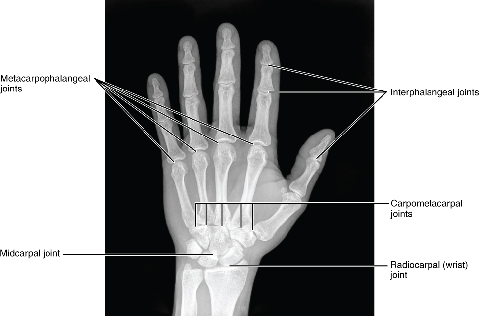
In the articulated hand, the carpal bones form a U-shaped grouping. A strong ligament called theflexor retinaculumspans the top of this U-shaped area to maintain this grouping of the carpal bones. The flexor retinaculum is attached laterally to the trapezium and scaphoid bones, and medially to the hamate and pisiform bones. Together, the carpal bones and the flexor retinaculum form a passageway called thecarpal tunnel, with the carpal bones forming the walls and floor, and the flexor retinaculum forming the roof of this space (Figure \(\PageIndex{5}\)). The tendons of nine muscles of the anterior forearm and an important nerve pass through this narrow tunnel to enter the hand. Overuse of the muscle tendons or wrist injury can produce inflammation and swelling within this space. This produces compression of the nerve, resulting in carpal tunnel syndrome, which is characterized by pain or numbness, and muscle weakness in those areas of the hand supplied by this nerve.
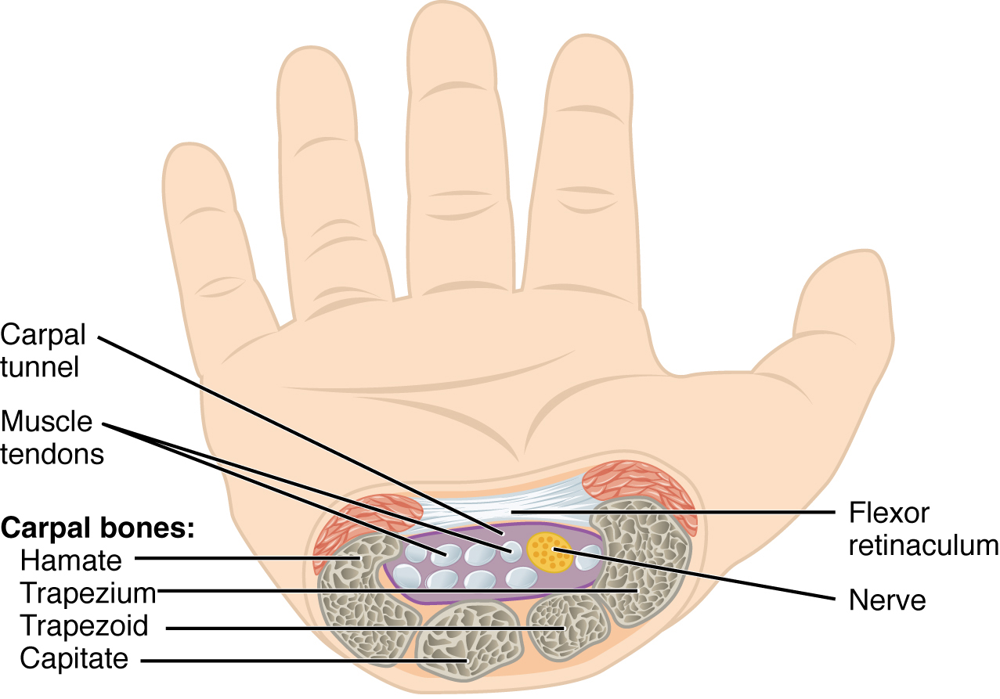
The palm of the hand contains five elongated metacarpal bones. These bones lie between the carpal bones of the wrist and the bones of the fingers and thumb (see Figure 8.7). The proximal end of each metacarpal bone articulates with one of the distal carpal bones. Each of these articulations is acarpometacarpal joint(see Figure \(\PageIndex{6}\)). The expanded distal end of each metacarpal bone articulates at themetacarpophalangeal jointwith the proximal phalanx bone of the thumb or one of the fingers. The distal end also forms the knuckles of the hand, at the base of the fingers. The metacarpal bones are numbered 1–5, beginning at the thumb.
The first metacarpal bone, at the base of the thumb, is separated from the other metacarpal bones. This allows it a freedom of motion that is independent of the other metacarpal bones, which is very important for thumb mobility. The remaining metacarpal bones are united together to form the palm of the hand. The second and third metacarpal bones are firmly anchored in place and are immobile. However, the fourth and fifth metacarpal bones have limited anterior-posterior mobility, a motion that is greater for the fifth bone. This mobility is important during power gripping with the hand (Figure 8.10). The anterior movement of these bones, particularly the fifth metacarpal bone, increases the strength of contact for the medial hand during gripping actions.
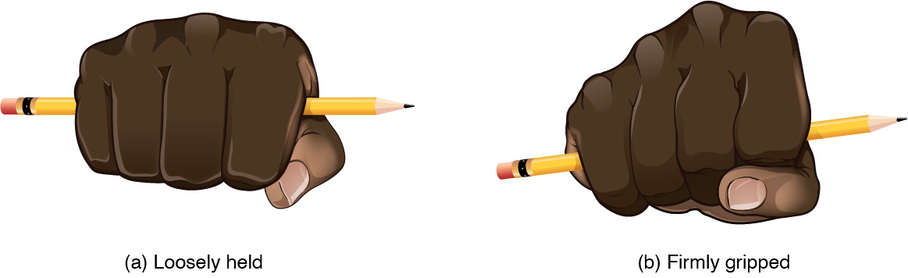
The fingers and thumb contain 14 bones, each of which is called a phalanx bone (plural = phalanges), named after the ancient Greek phalanx (a rectangular block of soldiers). The thumb (pollex) is digit number 1 and has two phalanges, a proximal phalanx, and a distal phalanx bone (see Figure 8.7). Digits 2 (index finger) through 5 (little finger) have three phalanges each, called the proximal, middle, and distal phalanx bones. Aninterphalangeal jointis one of the articulations between adjacent phalanges of the digits (see Figure (\PageIndex{7}\)).
Visit thissiteto explore the bones and joints of the hand.
#### Appendicular System: Fractures of Upper Limb Bones
Due to our constant use of the hands and the rest of our upper limbs, an injury to any of these areas will cause a significant loss of functional ability. Many fractures result from a hard fall onto an outstretched hand. The resulting transmission of force up the limb may result in a fracture of the humerus, radius, or scaphoid bones. These injuries are especially common in elderly people whose bones are weakened due to osteoporosis.
Falls onto the hand or elbow, or direct blows to the arm, can result in fractures of the humerus (Figure 8.11). Following a fall, fractures at the surgical neck, the region at which the expanded proximal end of the humerus joins with the shaft, can result in an impacted fracture, in which the distal portion of the humerus is driven into the proximal portion. Falls or blows to the arm can also produce transverse or spiral fractures of the humeral shaft.
In children, a fall onto the tip of the elbow frequently results in a distal humerus fracture. In these, the olecranon of the ulna is driven upward, resulting in a fracture across the distal humerus, above both epicondyles (supracondylar fracture), or a fracture between the epicondyles, thus separating one or both of the epicondyles from the body of the humerus (intercondylar fracture). With these injuries, the immediate concern is possible compression of the artery to the forearm due to swelling of the surrounding tissues. If compression occurs, the resulting ischemia (lack of oxygen) due to reduced blood flow can quickly produce irreparable damage to the forearm muscles. In addition, four major nerves for shoulder and upper limb muscles are closely associated with different regions of the humerus, and thus, humeral fractures may also damage these nerves.
Another frequent injury following a fall onto an outstretched hand is a Colles fracture (“col-lees”) of the distal radius (see Figure 8.11). This involves a complete transverse fracture across the distal radius that drives the separated distal fragment of the radius posteriorly and superiorly. This injury results in a characteristic “dinner fork” bend of the forearm just above the wrist due to the posterior displacement of the hand. This is the most frequent forearm fracture and is a common injury in persons over the age of 50, particularly in older people with osteoporosis. It also commonly occurs following a high-speed fall onto the hand during activities such as snowboarding or skating.
The most commonly fractured carpal bone is the scaphoid, often resulting from a fall onto the hand. Deep pain at the lateral wrist may yield an initial diagnosis of a wrist sprain, but a radiograph taken several weeks after the injury, after tissue swelling has subsided, will reveal the fracture. Due to the poor blood supply to the scaphoid bone, healing will be slow and there is the danger of bone necrosis and subsequent degenerative joint disease of the wrist.
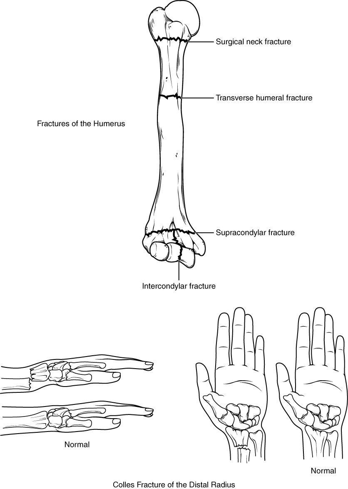
Watch thisvideoto learn about a Colles fracture, a break of the distal radius, usually caused by falling onto an outstretched hand. When would surgery be required and how would the fracture be repaired in this case?
📖 OpenStax Anatomy & Physiology 2e, Section 8.3. openstax.org · CC BY 4.0
- Define the pelvic girdle and describe the bones and ligaments of the pelvis
- Explain the three regions of the hip bone and identify their bony landmarks
- Describe the openings of the pelvis and the boundaries of the greater and lesser pelvis
Thepelvic girdle(hip girdle) is formed by a single bone, thehip boneorcoxal bone(coxal = “hip”), which serves as the attachment point for each lower limb. Each hip bone, in turn, is firmly joined to the axial skeleton via its attachment to the sacrum of the vertebral column. The right and left hip bones also converge anteriorly to attach to each other. The bonypelvisis the entire structure formed by the two hip bones, the sacrum, and, attached inferiorly to the sacrum, the coccyx (Figure \(\PageIndex{1}\)).
Unlike the bones of the pectoral girdle, which are highly mobile to enhance the range of upper limb movements, the bones of the pelvis are strongly united to each other to form a largely immobile, weight-bearing structure. This is important for stability because it enables the weight of the body to be easily transferred laterally from the vertebral column, through the pelvic girdle and hip joints, and into either lower limb whenever the other limb is not bearing weight. Thus, the immobility of the pelvis provides a strong foundation for the upper body as it rests on top of the mobile lower limbs.
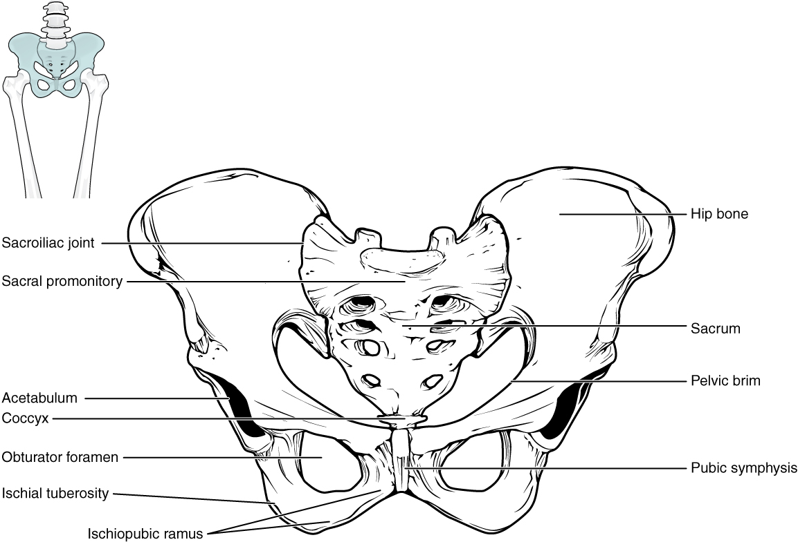
The hip bone, or coxal bone, forms the pelvic girdle portion of the pelvis. The paired hip bones are the large, curved bones that form the lateral and anterior aspects of the pelvis. Each adult hip bone is formed by three separate bones that fuse together during the late teenage years. These bony components are the ilium, ischium, and pubis (Figure \(\PageIndex{2}\)). These names are retained and used to define the three regions of the adult hip bone.
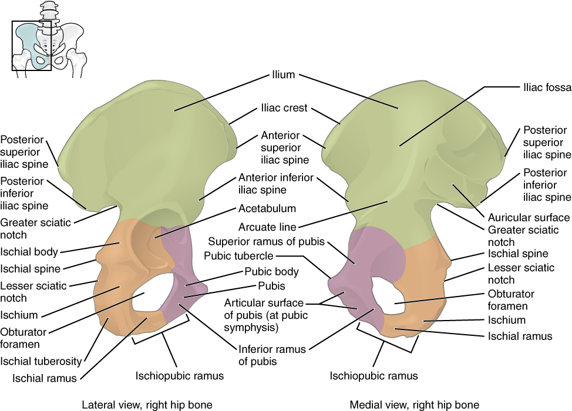
Theiliumis the fan-like, superior region that forms the largest part of the hip bone. It is firmly united to the sacrum at the largely immobilesacroiliac joint(see Figure 8.12). Theischiumforms the posteroinferior region of each hip bone. It supports the body when sitting. Thepubisforms the anterior portion of the hip bone. The pubis curves medially, where it joins to the pubis of the opposite hip bone at a specialized joint called thepubic symphysis.
When you place your hands on your waist, you can feel the arching, superior margin of the ilium along your waistline (see Figure \(\PageIndex{2}\)). This curved, superior margin of the ilium is theiliac crest. The rounded, anterior termination of the iliac crest is theanterior superior iliac spine. This important bony landmark can be felt at your anterolateral hip. Inferior to the anterior superior iliac spine is a rounded protuberance called theanterior inferior iliac spine. Both of these iliac spines serve as attachment points for muscles of the thigh. Posteriorly, the iliac crest curves downward to terminate as theposterior superior iliac spine. Muscles and ligaments surround but do not cover this bony landmark, thus sometimes producing a depression seen as a “dimple” located on the lower back. More inferiorly is theposterior inferior iliac spine. This is located at the inferior end of a large, roughened area called theauricular surface of the ilium. The auricular surface articulates with the auricular surface of the sacrum to form the sacroiliac joint. Both the posterior superior and posterior inferior iliac spines serve as attachment points for the muscles and very strong ligaments that support the sacroiliac joint.
The shallow depression located on the anteromedial (internal) surface of the upper ilium is called theiliac fossa. The inferior margin of this space is formed by thearcuate line of the ilium, the ridge formed by the pronounced change in curvature between the upper and lower portions of the ilium. The large, inverted U-shaped indentation located on the posterior margin of the lower ilium is called thegreater sciatic notch.
The ischium forms the posterolateral portion of the hip bone (see Figure \(\PageIndex{2}\)). The large, roughened area of the inferior ischium is theischial tuberosity. This serves as the attachment for the posterior thigh muscles and also carries the weight of the body when sitting. You can feel the ischial tuberosity if you wiggle your pelvis against the seat of a chair. Projecting superiorly and anteriorly from the ischial tuberosity is a narrow segment of bone called theischial ramus. The slightly curved posterior margin of the ischium above the ischial tuberosity is thelesser sciatic notch. The bony projection separating the lesser sciatic notch and greater sciatic notch is theischial spine.
The pubis forms the anterior portion of the hip bone (see Figure \(\PageIndex{2}\)). The enlarged medial portion of the pubis is thepubic body. Located superiorly on the pubic body is a small bump called thepubic tubercle. Thesuperior pubic ramusis the segment of bone that passes laterally from the pubic body to join the ilium. The narrow ridge running along the superior margin of the superior pubic ramus is thepectineal lineof the pubis.
The pubic body is joined to the pubic body of the opposite hip bone by the pubic symphysis. Extending downward and laterally from the body is theinferior pubic ramus. Thepubic archis the bony structure formed by the pubic symphysis, and the bodies and inferior pubic rami of the adjacent pubic bones. The inferior pubic ramus extends downward to join the ischial ramus. Together, these form the singleischiopubic ramus, which extends from the pubic body to the ischial tuberosity. The inverted V-shape formed as the ischiopubic rami from both sides come together at the pubic symphysis is called thesubpubic angle.
The pelvis consists of four bones: the right and left hip bones, the sacrum, and the coccyx (see Figure \(\PageIndex{1}\)). The pelvis has several important functions. Its primary role is to support the weight of the upper body when sitting and to transfer this weight to the lower limbs when standing. It serves as an attachment point for trunk and lower limb muscles, and also protects the internal pelvic organs. When standing in the anatomical position, the pelvis is tilted anteriorly. In this position, the anterior superior iliac spines and the pubic tubercles lie in the same vertical plane, and the anterior (internal) surface of the sacrum faces forward and downward.
The three areas of each hip bone, the ilium, pubis, and ischium, converge centrally to form a deep, cup-shaped cavity called theacetabulum. This is located on the lateral side of the hip bone and is part of the hip joint. The large opening in the anteroinferior hip bone between the ischium and pubis is theobturator foramen. This space is largely filled in by a layer of connective tissue and serves for the attachment of muscles on both its internal and external surfaces.
Several ligaments unite the bones of the pelvis (Figure \(\PageIndex{3}\)). The largely immobile sacroiliac joint is supported by a pair of strong ligaments that are attached between the sacrum and ilium portions of the hip bone. These are theanterior sacroiliac ligamenton the anterior side of the joint and theposterior sacroiliac ligamenton the posterior side. Also spanning the sacrum and hip bone are two additional ligaments. Thesacrospinous ligamentruns from the sacrum to the ischial spine, and thesacrotuberous ligamentruns from the sacrum to the ischial tuberosity. These ligaments help to support and immobilize the sacrum as it carries the weight of the body.
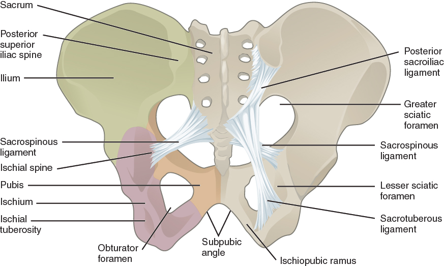
Watch thisvideofor a 3-D view of the pelvis and its associated ligaments. What is the large opening in the bony pelvis, located between the ischium and pubic regions, and what two parts of the pubis contribute to the formation of this opening?
The sacrospinous and sacrotuberous ligaments also help to define two openings on the posterolateral sides of the pelvis through which muscles, nerves, and blood vessels for the lower limb exit. The superior opening is thegreater sciatic foramen. This large opening is formed by the greater sciatic notch of the hip bone, the sacrum, and the sacrospinous ligament. The smaller, more inferiorlesser sciatic foramenis formed by the lesser sciatic notch of the hip bone, together with the sacrospinous and sacrotuberous ligaments.
The space enclosed by the bony pelvis is divided into two regions (Figure \(\PageIndex{4}\)). The broad, superior region, defined laterally by the large, fan-like portion of the upper hip bone, is called thegreater pelvis(greater pelvic cavity; false pelvis). This broad area is occupied by portions of the small and large intestines, and because it is more closely associated with the abdominal cavity, it is sometimes referred to as the false pelvis. More inferiorly, the narrow, rounded space of thelesser pelvis(lesser pelvic cavity; true pelvis) contains the bladder and other pelvic organs, and thus is also known as the true pelvis. Thepelvic brim(also known as thepelvic inlet) forms the superior margin of the lesser pelvis, separating it from the greater pelvis. The pelvic brim is defined by a line formed by the upper margin of the pubic symphysis anteriorly, and the pectineal line of the pubis, the arcuate line of the ilium, and the sacral promontory (the anterior margin of the superior sacrum) posteriorly. The inferior limit of the lesser pelvic cavity is called thepelvic outlet. This large opening is defined by the inferior margin of the pubic symphysis anteriorly, and the ischiopubic ramus, the ischial tuberosity, the sacrotuberous ligament, and the inferior tip of the coccyx posteriorly. Because of the anterior tilt of the pelvis, the lesser pelvis is also angled, giving it an anterosuperior (pelvic inlet) to posteroinferior (pelvic outlet) orientation.

#### Comparison of the Female and Male Pelvis
The differences between the adult female and male pelvis relate to function and body size. In general, the bones of the male pelvis are thicker and heavier, adapted for support of the male’s heavier physical build and stronger muscles. The greater sciatic notch of the male hip bone is narrower and deeper than the broader notch of females. Because the female pelvis is adapted for childbirth, it is wider than the male pelvis, as evidenced by the distance between the anterior superior iliac spines (see Figure 8.15). The ischial tuberosities of females are also farther apart, which increases the size of the pelvic outlet. Because of this increased pelvic width, the subpubic angle is larger in females (greater than 80 degrees) than it is in males (less than 70 degrees). The female sacrum is wider, shorter, and less curved, and the sacral promontory projects less into the pelvic cavity, thus giving the female pelvic inlet (pelvic brim) a more rounded or oval shape compared to males. The lesser pelvic cavity of females is also wider and more shallow than the narrower, deeper, and tapering lesser pelvis of males. Because of the obvious differences between female and male hip bones, this is the one bone of the body that allows for the most accurate sex determination. Table \(\PageIndex{1}\) provides an overview of the general differences between the female and male pelvis.
| Female pelvis | Male pelvis | |
|---|---|---|
| Pelvic weight | Bones of the pelvis are lighter and thinner | Bones of the pelvis are thicker and heavier |
| Pelvic inlet shape | Pelvic inlet has a round or oval shape | Pelvic inlet is heart-shaped |
| Lesser pelvic cavity shape | Lesser pelvic cavity is shorter and wider | Lesser pelvic cavity is longer and narrower |
| Subpubic angle | Subpubic angle is greater than 80 degrees | Subpubic angle is less than 70 degrees |
| Pelvic outlet shape | Pelvic outlet is rounded and larger | Pelvic outlet is smaller |
#### Forensic Pathology and Forensic Anthropology
A forensic pathologist (also known as a medical examiner) is a medically trained physician who has been specifically trained in pathology to examine the bodies of the deceased to determine the cause of death. A forensic pathologist applies understanding of disease as well as toxins, blood and DNA analysis, firearms and ballistics, and other factors to assess the cause and manner of death. At times, a forensic pathologist will be called to testify under oath in situations that involve a possible crime. Forensic pathology is a field that has received much media attention on television shows or following a high-profile death.
While forensic pathologists are responsible for determining whether the cause of someone’s death was natural, by suicide, accidental, or by homicide, there are times when uncovering the cause of death is more complex, and other skills are needed. Forensic anthropology brings the tools and knowledge of physical anthropology and human osteology (the study of the skeleton) to the task of investigating a death. A forensic anthropologist assists medical and legal professionals in identifying human remains. The science behind forensic anthropology involves the study of archaeological excavation; the examination of hair; an understanding of plants, insects, and footprints; the ability to determine how much time has elapsed since the person died; the analysis of past medical history and toxicology; the ability to determine whether there are any postmortem injuries or alterations of the skeleton; and the identification of the decedent (deceased person) using skeletal and dental evidence.
Due to the extensive knowledge and understanding of excavation techniques, a forensic anthropologist is an integral and invaluable team member to have on-site when investigating a crime scene, especially when the recovery of human skeletal remains is involved. When remains are bought to a forensic anthropologist for examination, they must first determine whether the remains are in fact human. Once the remains have been identified as belonging to a person and not to an animal, the next step is to approximate the individual’s age, sex, race, and height. The forensic anthropologist does not determine the cause of death, but rather provides information to the forensic pathologist, who will use all of the data collected to make a final determination regarding the cause of death.
📖 OpenStax Anatomy & Physiology 2e, Section 8.4. openstax.org · CC BY 4.0
- Identify the divisions of the lower limb and describe the bones of each region
- Describe the bones and bony landmarks that articulate at each joint of the lower limb
Like the upper limb, the lower limb is divided into three regions. Thethighis that portion of the lower limb located between the hip joint and knee joint. Thelegis specifically the region between the knee joint and the ankle joint. Distal to the ankle is thefoot. The lower limb contains 30 bones. These are the femur, patella, tibia, fibula, tarsal bones, metatarsal bones, and phalanges (see Figure 8.2). Thefemuris the single bone of the thigh. Thepatellais the kneecap and articulates with the distal femur. Thetibiais the larger, weight-bearing bone located on the medial side of the leg, and thefibulais the thin bone of the lateral leg. The bones of the foot are divided into three groups. The posterior portion of the foot is formed by a group of seven bones, each of which is known as atarsal bone, whereas the mid-foot contains five elongated bones, each of which is ametatarsal bone. The toes contain 14 small bones, each of which is aphalanx bone of the foot.
The femur, or thigh bone, is the single bone of the thigh region (Figure \(\PageIndex{1}\) ). It is the longest and strongest bone of the body, and accounts for approximately one-quarter of a person’s total height. The rounded, proximal end is thehead of the femur, which articulates with the acetabulum of the hip bone to form thehip joint. Thefovea capitisis a minor indentation on the medial side of the femoral head that serves as the site of attachment for theligament of the head of the femur. This ligament spans the femur and acetabulum, but is weak and provides little support for the hip joint. It does, however, carry an important artery that supplies the head of the femur.
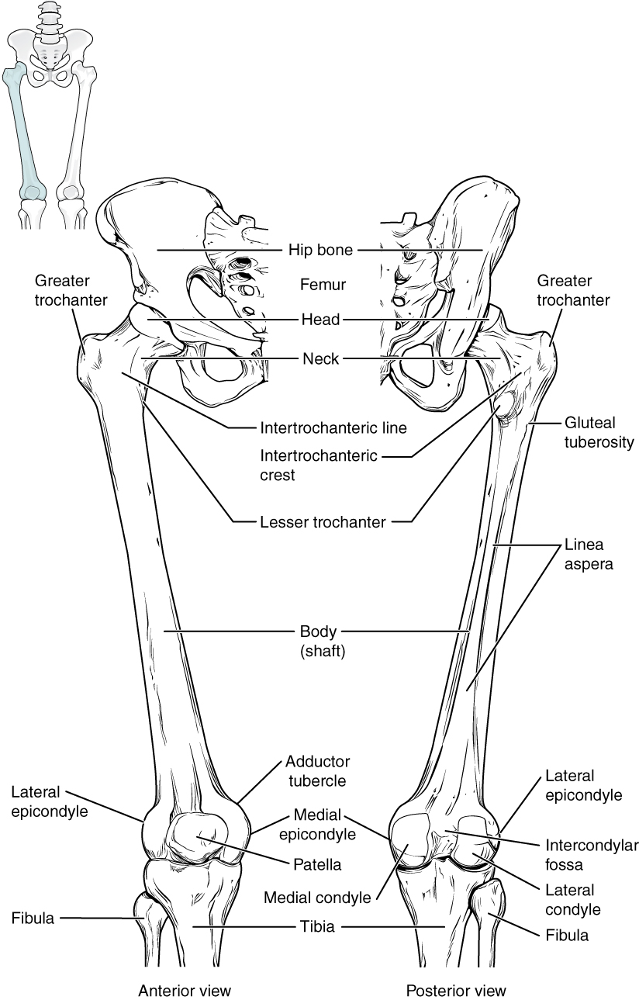
The narrowed region below the head is theneck of the femur. This is a common area for fractures of the femur. Thegreater trochanteris the large, upward, bony projection located above the base of the neck. Multiple muscles that act across the hip joint attach to the greater trochanter, which, because of its projection from the femur, gives additional leverage to these muscles. The greater trochanter can be felt just under the skin on the lateral side of your upper thigh. Thelesser trochanteris a small, bony prominence that lies on the medial aspect of the femur, just below the neck. A single, powerful muscle attaches to the lesser trochanter. Running between the greater and lesser trochanters on the anterior side of the femur is the roughenedintertrochanteric line. The trochanters are also connected on the posterior side of the femur by the largerintertrochanteric crest.
The elongatedshaft of the femurhas a slight anterior bowing or curvature. At its proximal end, the posterior shaft has thegluteal tuberosity, a roughened area extending inferiorly from the greater trochanter. More inferiorly, the gluteal tuberosity becomes continuous with thelinea aspera(“rough line”). This is the roughened ridge that passes distally along the posterior side of the mid-femur. Multiple muscles of the hip and thigh regions make long, thin attachments to the femur along the linea aspera.
The distal end of the femur has medial and lateral bony expansions. On the lateral side, the smooth portion that covers the distal and posterior aspects of the lateral expansion is thelateral condyle of the femur. The roughened area on the outer, lateral side of the condyle is thelateral epicondyle of the femur. Similarly, the smooth region of the distal and posterior medial femur is themedial condyle of the femur, and the irregular outer, medial side of this is themedial epicondyle of the femur. The lateral and medial condyles articulate with the tibia to form the knee joint. The epicondyles provide attachment for muscles and supporting ligaments of the knee. Theadductor tubercleis a small bump located at the superior margin of the medial epicondyle. Posteriorly, the medial and lateral condyles are separated by a deep depression called theintercondylar fossa. Anteriorly, the smooth surfaces of the condyles join together to form a wide groove called thepatellar surface, which provides for articulation with the patella bone. The combination of the medial and lateral condyles with the patellar surface gives the distal end of the femur a horseshoe (U) shape.
Watch this video to view how a fracture of the mid-femur is surgically repaired. How are the two portions of the broken femur stabilized during surgical repair of a fractured femur?
The patella (kneecap) is largest sesamoid bone of the body (see Figure 8.16). A sesamoid bone is a bone that is incorporated into the tendon of a muscle where that tendon crosses a joint. The sesamoid bone articulates with the underlying bones to prevent damage to the muscle tendon due to rubbing against the bones during movements of the joint. The patella is found in the tendon of the quadriceps femoris muscle, the large muscle of the anterior thigh that passes across the anterior knee to attach to the tibia. The patella articulates with the patellar surface of the femur and thus prevents rubbing of the muscle tendon against the distal femur. The patella also lifts the tendon away from the knee joint, which increases the leverage power of the quadriceps femoris muscle as it acts across the knee. The patella does not articulate with the tibia.
Visit this site to watch a virtual knee replacement surgery. The prosthetic knee components must be properly aligned to function properly. How is this alignment ensured?
Runner’s knee, also known as patellofemoral syndrome, is the most common overuse injury among runners. It is most frequent in adolescents and young adults, and is more common in females. It often results from excessive running, particularly downhill, but may also occur in athletes who do a lot of knee bending, such as jumpers, skiers, cyclists, weight lifters, and soccer players. It is felt as a dull, aching pain around the front of the knee and deep to the patella. The pain may be felt when walking or running, going up or down stairs, kneeling or squatting, or after sitting with the knee bent for an extended period.
Patellofemoral syndrome may be initiated by a variety of causes, including individual variations in the shape and movement of the patella, a direct blow to the patella, or flat feet or improper shoes that cause excessive turning in or out of the feet or leg. These factors may cause in an imbalance in the muscle pull that acts on the patella, resulting in an abnormal tracking of the patella that allows it to deviate too far toward the lateral side of the patellar surface on the distal femur.
Because the hips are wider than the knee region, the femur has a diagonal orientation within the thigh, in contrast to the vertically oriented tibia of the leg (Figure \(\PageIndex{2}\)). The Q-angle is a measure of how far the femur is angled laterally away from vertical. The Q-angle is normally 10–15 degrees, with females typically having a larger Q-angle due to their wider pelvis. During extension of the knee, the quadriceps femoris muscle pulls the patella both superiorly and laterally, with the lateral pull greater in females due to their large Q-angle. This makes females more vulnerable to developing patellofemoral syndrome than males. Normally, the large lip on the lateral side of the patellar surface of the femur compensates for the lateral pull on the patella, and thus helps to maintain its proper tracking.
However, if the pull produced by the medial and lateral sides of the quadriceps femoris muscle is not properly balanced, abnormal tracking of the patella toward the lateral side may occur. With continued use, this produces pain and could result in damage to the articulating surfaces of the patella and femur, and the possible future development of arthritis. Treatment generally involves stopping the activity that produces knee pain for a period of time, followed by a gradual resumption of activity. Proper strengthening of the quadriceps femoris muscle to correct for imbalances is also important to help prevent reoccurrence.
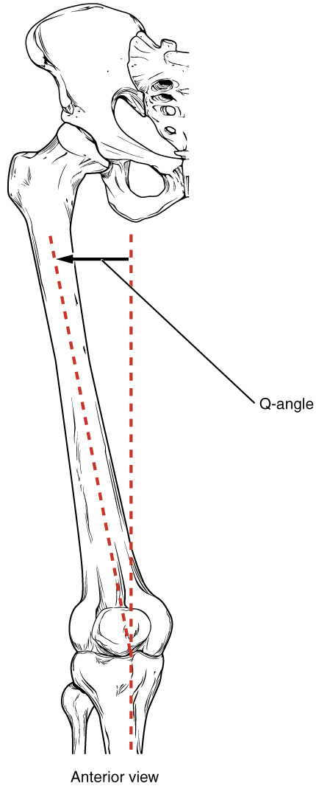
The tibia (shin bone) is the medial bone of the leg and is larger than the fibula, with which it is paired (Figure \(\PageIndex{3}\) ). The tibia is the main weight-bearing bone of the lower leg and the second longest bone of the body, after the femur. The medial side of the tibia is located immediately under the skin, allowing it to be easily palpated down the entire length of the medial leg.
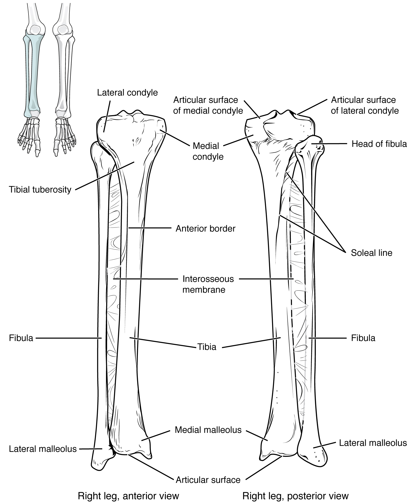
The proximal end of the tibia is greatly expanded. The two sides of this expansion form themedial condyle of the tibiaand thelateral condyle of the tibia. The tibia does not have epicondyles. The top surface of each condyle is smooth and flattened. These areas articulate with the medial and lateral condyles of the femur to form theknee joint. Between the articulating surfaces of the tibial condyles is theintercondylar eminence, an irregular, elevated area that serves as the inferior attachment point for two supporting ligaments of the knee.
Thetibial tuberosityis an elevated area on the anterior side of the tibia, near its proximal end. It is the final site of attachment for the muscle tendon associated with the patella. More inferiorly, theshaft of the tibiabecomes triangular in shape.
The anterior apex of this triangle forms theanterior border of the tibia, which begins at the tibial tuberosity and runs inferiorly along the length of the tibia. Both the anterior border and the medial side of the triangular shaft are located immediately under the skin and can be easily palpated along the entire length of the tibia. A small ridge running down the lateral side of the tibial shaft is theinterosseous border of the tibia. This is for the attachment of theinterosseous membrane of the leg, the sheet of dense connective tissue that unites the tibia and fibula bones. Located on the posterior side of the tibia is thesoleal line, a diagonally running, roughened ridge that begins below the base of the lateral condyle, and runs down and medially across the proximal third of the posterior tibia. Muscles of the posterior leg attach to this line.
The large expansion found on the medial side of the distal tibia is themedial malleolus(“little hammer”). This forms the large bony bump found on the medial side of the ankle region. Both the smooth surface on the inside of the medial malleolus and the smooth area at the distal end of the tibia articulate with the talus bone of the foot as part of the ankle joint. On the lateral side of the distal tibia is a wide groove called thefibular notch. This area articulates with the distal end of the fibula, forming thedistal tibiofibular joint.
The fibula is the slender bone located on the lateral side of the leg (see Figure \(\PageIndex{3}\) ). The fibula does not bear weight. It serves primarily for muscle attachments and thus is largely surrounded by muscles. Only the proximal and distal ends of the fibula can be palpated.
Thehead of the fibulais the small, knob-like, proximal end of the fibula. It articulates with the inferior aspect of the lateral tibial condyle, forming theproximal tibiofibular joint. The thinshaft of the fibulahas theinterosseous border of the fibula, a narrow ridge running down its medial side for the attachment of the interosseous membrane that spans the fibula and tibia. The distal end of the fibula forms thelateral malleolus, which forms the easily palpated bony bump on the lateral side of the ankle. The deep (medial) side of the lateral malleolus articulates with the talus bone of the foot as part of the ankle joint. The distal fibula also articulates with the fibular notch of the tibia.
The posterior half of the foot is formed by seven tarsal bones (Figure \(\PageIndex{4}\) ). The most superior bone is thetalus. This has a relatively square-shaped, upper surface that articulates with the tibia and fibula to form theankle joint. Three areas of articulation form the ankle joint: The superomedial surface of the talus bone articulates with the medial malleolus of the tibia, the top of the talus articulates with the distal end of the tibia, and the lateral side of the talus articulates with the lateral malleolus of the fibula. Inferiorly, the talus articulates with thecalcaneus(heel bone), the largest bone of the foot, which forms the heel. Body weight is transferred from the tibia to the talus to the calcaneus, which rests on the ground. The medial calcaneus has a prominent bony extension called thesustentaculum tali(“support for the talus”) that supports the medial side of the talus bone.
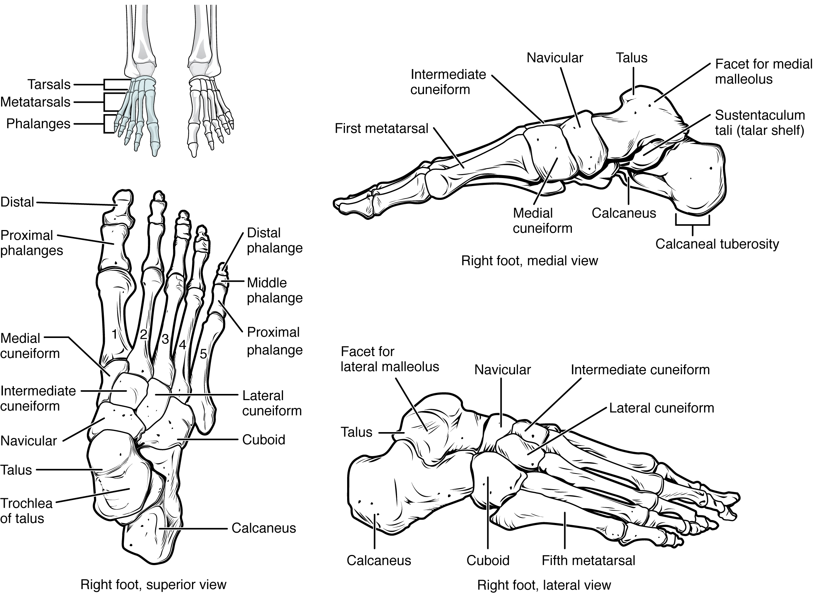
Thecuboidbone articulates with the anterior end of the calcaneus bone. The cuboid has a deep groove running across its inferior surface, which provides passage for a muscle tendon. The talus bone articulates anteriorly with thenavicularbone, which in turn articulates anteriorly with the three cuneiform (“wedge-shaped”) bones. These bones are themedial cuneiform, theintermediate cuneiform, and thelateral cuneiform. Each of these bones has a broad superior surface and a narrow inferior surface, which together produce the transverse (medial-lateral) curvature of the foot. The navicular and lateral cuneiform bones also articulate with the medial side of the cuboid bone.
Use this tutorial to review the bones of the foot. Which tarsal bones are in the proximal, intermediate, and distal groups?
The anterior half of the foot is formed by the five metatarsal bones, which are located between the tarsal bones of the posterior foot and the phalanges of the toes (see Figure 8.19). These elongated bones are numbered 1–5, starting with the medial side of the foot. The first metatarsal bone is shorter and thicker than the others. The second metatarsal is the longest. Thebase of the metatarsal boneis the proximal end of each metatarsal bone. These articulate with the cuboid or cuneiform bones. The base of the fifth metatarsal has a large, lateral expansion that provides for muscle attachments. This expanded base of the fifth metatarsal can be felt as a bony bump at the midpoint along the lateral border of the foot. The expanded distal end of each metatarsal is thehead of the metatarsal bone. Each metatarsal bone articulates with the proximal phalanx of a toe to form ametatarsophalangeal joint. The heads of the metatarsal bones also rest on the ground and form the ball (anterior end) of the foot.
The toes contain a total of 14 phalanx bones (phalanges), arranged in a similar manner as the phalanges of the fingers (see Figure 8.19). The toes are numbered 1–5, starting with the big toe (hallux). The big toe has two phalanx bones, the proximal and distal phalanges. The remaining toes all have proximal, middle, and distal phalanges. A joint between adjacent phalanx bones is called an interphalangeal joint.
View thislinkto learn about a bunion, a localized swelling on the medial side of the foot, next to the first metatarsophalangeal joint, at the base of the big toe. What is a bunion and what type of shoe is most likely to cause this to develop?
When the foot comes into contact with the ground during walking, running, or jumping activities, the impact of the body weight puts a tremendous amount of pressure and force on the foot. During running, the force applied to each foot as it contacts the ground can be up to 2.5 times your body weight. The bones, joints, ligaments, and muscles of the foot absorb this force, thus greatly reducing the amount of shock that is passed superiorly into the lower limb and body. The arches of the foot play an important role in this shock-absorbing ability. When weight is applied to the foot, these arches will flatten somewhat, thus absorbing energy. When the weight is removed, the arch rebounds, giving “spring” to the step. The arches also serve to distribute body weight side to side and to either end of the foot.
The foot has a transverse arch, a medial longitudinal arch, and a lateral longitudinal arch (see Figure 8.19). The transverse arch forms the medial-lateral curvature of the mid-foot. It is formed by the wedge shapes of the cuneiform bones and bases (proximal ends) of the first to fourth metatarsal bones. This arch helps to distribute body weight from side to side within the foot, thus allowing the foot to accommodate uneven terrain.
The longitudinal arches run down the length of the foot. The lateral longitudinal arch is relatively flat, whereas the medial longitudinal arch is larger (taller). The longitudinal arches are formed by the tarsal bones posteriorly and the metatarsal bones anteriorly. These arches are supported at either end, where they contact the ground. Posteriorly, this support is provided by the calcaneus bone and anteriorly by the heads (distal ends) of the metatarsal bones. The talus bone, which receives the weight of the body, is located at the top of the longitudinal arches. Body weight is then conveyed from the talus to the ground by the anterior and posterior ends of these arches. Strong ligaments unite the adjacent foot bones to prevent disruption of the arches during weight bearing. On the bottom of the foot, additional ligaments tie together the anterior and posterior ends of the arches. These ligaments have elasticity, which allows them to stretch somewhat during weight bearing, thus allowing the longitudinal arches to spread. The stretching of these ligaments stores energy within the foot, rather than passing these forces into the leg. Contraction of the foot muscles also plays an important role in this energy absorption. When the weight is removed, the elastic ligaments recoil and pull the ends of the arches closer together. This recovery of the arches releases the stored energy and improves the energy efficiency of walking.
Stretching of the ligaments that support the longitudinal arches can lead to pain. This can occur in overweight individuals, with people who have jobs that involve standing for long periods of time (such as a waitress), or walking or running long distances. If stretching of the ligaments is prolonged, excessive, or repeated, it can result in a gradual lengthening of the supporting ligaments, with subsequent depression or collapse of the longitudinal arches, particularly on the medial side of the foot. This condition is called pes planus (“flat foot” or “fallen arches”).
📖 OpenStax Anatomy & Physiology 2e, Section 8.5. openstax.org · CC BY 4.0
- Describe the growth and development of the embryonic limb buds
- Discuss the appearance of primary and secondary ossification centers
Embryologically, the appendicular skeleton arises from mesenchyme, a type of embryonic tissue that can differentiate into many types of tissues, including bone or muscle tissue. Mesenchyme gives rise to the bones of the upper and lower limbs, as well as to the pectoral and pelvic girdles. Development of the limbs begins near the end of the fourth embryonic week, with the upper limbs appearing first. Thereafter, the development of the upper and lower limbs follows similar patterns, with the lower limbs lagging behind the upper limbs by a few days.
Each upper and lower limb initially develops as a small bulge called alimb bud, which appears on the lateral side of the early embryo. The upper limb bud appears near the end of the fourth week of development, with the lower limb bud appearing shortly after (Figure \(\PageIndex{1}\)).
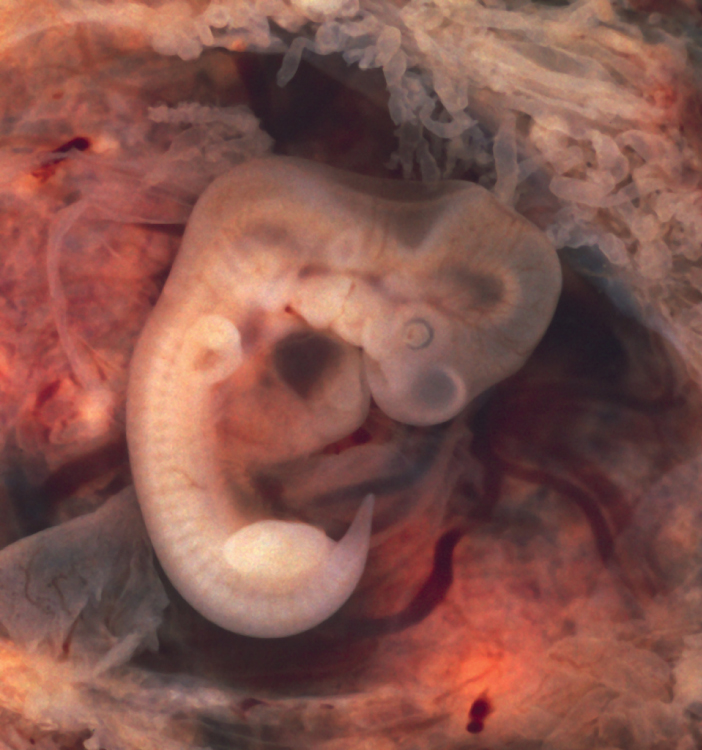
Initially, the limb buds consist of a core of mesenchyme covered by a layer of ectoderm. The ectoderm at the end of the limb bud thickens to form a narrow crest called theapical ectodermal ridge. This ridge stimulates the underlying mesenchyme to rapidly proliferate, producing the outgrowth of the developing limb. As the limb bud elongates, cells located farther from the apical ectodermal ridge slow their rates of cell division and begin to differentiate. In this way, the limb develops along a proximal-to-distal axis.
During the sixth week of development, the distal ends of the upper and lower limb buds expand and flatten into a paddle shape. This region will become the hand or foot. The wrist or ankle areas then appear as a constriction that develops at the base of the paddle. Shortly after this, a second constriction on the limb bud appears at the future site of the elbow or knee. Within the paddle, areas of tissue undergo cell death, producing separations between the growing fingers and toes. Also during the sixth week of development, mesenchyme within the limb buds begins to differentiate into hyaline cartilage that will form models of the future limb bones.
The early outgrowth of the upper and lower limb buds initially has the limbs positioned so that the regions that will become the palm of the hand or the bottom of the foot are facing medially toward the body, with the future thumb or big toe both oriented toward the head. During the seventh week of development, the upper limb rotates laterally by 90 degrees, so that the palm of the hand faces anteriorly and the thumb points laterally. In contrast, the lower limb undergoes a 90-degree medial rotation, thus bringing the big toe to the medial side of the foot.
Watch this animation to follow the development and growth of the upper and lower limb buds. On what days of embryonic development do these events occur: (a) first appearance of the upper limb bud (limb ridge); (b) the flattening of the distal limb to form the handplate or footplate; and (c) the beginning of limb rotation?
All of the girdle and limb bones, except for the clavicle, develop by the process of endochondral ossification. This process begins as the mesenchyme within the limb bud differentiates into hyaline cartilage to form cartilage models for future bones. By the twelfth week, a primary ossification center will have appeared in the diaphysis (shaft) region of the long bones, initiating the process that converts the cartilage model into bone. A secondary ossification center will appear in each epiphysis (expanded end) of these bones at a later time, usually after birth. The primary and secondary ossification centers are separated by the epiphyseal plate, a layer of growing hyaline cartilage. This plate is located between the diaphysis and each epiphysis. It continues to grow and is responsible for the lengthening of the bone. The epiphyseal plate is retained for many years, until the bone reaches its final, adult size, at which time the epiphyseal plate disappears and the epiphysis fuses to the diaphysis. (Seek additional content on ossification in the chapter on bone tissue.)
Small bones, such as the phalanges, will develop only one secondary ossification center and will thus have only a single epiphyseal plate. Large bones, such as the femur, will develop several secondary ossification centers, with an epiphyseal plate associated with each secondary center. Thus, ossification of the femur begins at the end of the seventh week with the appearance of the primary ossification center in the diaphysis, which rapidly expands to ossify the shaft of the bone prior to birth. Secondary ossification centers develop at later times. Ossification of the distal end of the femur, to form the condyles and epicondyles, begins shortly before birth. Secondary ossification centers also appear in the femoral head late in the first year after birth, in the greater trochanter during the fourth year, and in the lesser trochanter between the ages of 9 and 10 years. Once these areas have ossified, their fusion to the diaphysis and the disappearance of each epiphyseal plate follow a reversed sequence. Thus, the lesser trochanter is the first to fuse, doing so at the onset of puberty (around 11 years of age), followed by the greater trochanter approximately 1 year later. The femoral head fuses between the ages of 14–17 years, whereas the distal condyles of the femur are the last to fuse, between the ages of 16–19 years. Knowledge of the age at which different epiphyseal plates disappear is important when interpreting radiographs taken of children. Since the cartilage of an epiphyseal plate is less dense than bone, the plate will appear dark in a radiograph image. Thus, a normal epiphyseal plate may be mistaken for a bone fracture.
The clavicle is the one appendicular skeleton bone that does not develop via endochondral ossification. Instead, the clavicle develops through the process of intramembranous ossification. During this process, mesenchymal cells differentiate directly into bone-producing cells, which produce the clavicle directly, without first making a cartilage model. Because of this early production of bone, the clavicle is the first bone of the body to begin ossification, with ossification centers appearing during the fifth week of development. However, ossification of the clavicle is not complete until age 25.
#### Appendicular System: Congenital Clubfoot
Clubfoot, also known as talipes, is a congenital (present at birth) disorder of unknown cause and is the most common deformity of the lower limb. It affects the foot and ankle, causing the foot to be twisted inward at a sharp angle, like the head of a golf club (Figure \(\PageIndex{2}\)). Clubfoot has a frequency of about 1 out of every 1,000 births, and is twice as likely to occur in a male child as in a female child. In 50 percent of cases, both feet are affected.
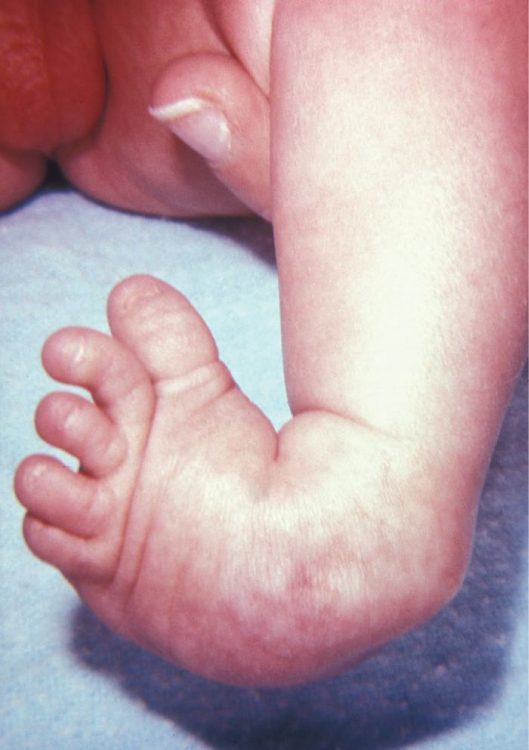
At birth, children with a clubfoot have the heel turned inward and the anterior foot twisted so that the lateral side of the foot is facing inferiorly, commonly due to ligaments or leg muscles attached to the foot that are shortened or abnormally tight. These pull the foot into an abnormal position, resulting in bone deformities. Other symptoms may include bending of the ankle that lifts the heel of the foot and an extremely high foot arch. Due to the limited range of motion in the affected foot, it is difficult to place the foot into the correct position. Additionally, the affected foot may be shorter than normal, and the calf muscles are usually underdeveloped on the affected side. Despite the appearance, this is not a painful condition for newborns. However, it must be treated early to avoid future pain and impaired walking ability.
Although the cause of clubfoot is idiopathic (unknown), evidence indicates that fetal position within the uterus is not a contributing factor. Genetic factors are involved, because clubfoot tends to run within families. Cigarette smoking during pregnancy has been linked to the development of clubfoot, particularly in families with a history of clubfoot.
Previously, clubfoot required extensive surgery. Today, 90 percent of cases are successfully treated without surgery using new corrective casting techniques. The best chance for a full recovery requires that clubfoot treatment begin during the first 2 weeks after birth. Corrective casting gently stretches the foot, which is followed by the application of a holding cast to keep the foot in the proper position. This stretching and casting is repeated weekly for several weeks. In severe cases, surgery may also be required, after which the foot typically remains in a cast for 6 to 8 weeks. After the cast is removed following either surgical or nonsurgical treatment, the child will be required to wear a brace part-time (at night) for up to 4 years. In addition, special exercises will be prescribed, and the child must also wear special shoes. Close monitoring by the parents and adherence to postoperative instructions are imperative in minimizing the risk of relapse.
Despite these difficulties, treatment for clubfoot is usually successful, and the child will grow up to lead a normal, active life. Numerous examples of individuals born with a clubfoot who went on to successful careers include Dudley Moore (comedian and actor), Damon Wayans (comedian and actor), Troy Aikman (three-time Super Bowl-winning quarterback), Kristi Yamaguchi (Olympic gold medalist in figure skating), Mia Hamm (two-time Olympic gold medalist in soccer), and Charles Woodson (Heisman trophy and Super Bowl winner).
📖 OpenStax Anatomy & Physiology 2e, Section 8.6. openstax.org · CC BY 4.0
| Section | Title |
|---|---|
| 8.2 | 8.2: The Pectoral Girdle |
| 8.3 | 8.3: Bones of the Upper Limb |
| 8.4 | 8.4: The Pelvic Girdle and Pelvis |
| 8.5 | 8.5: Bones of the Lower Limb |
| 8.6 | 8.6: Development of the Appendicular Skeleton |